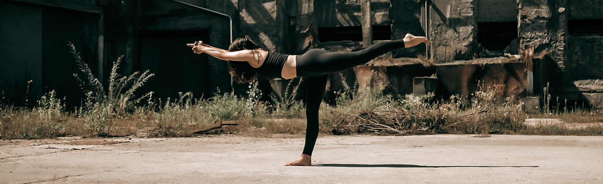
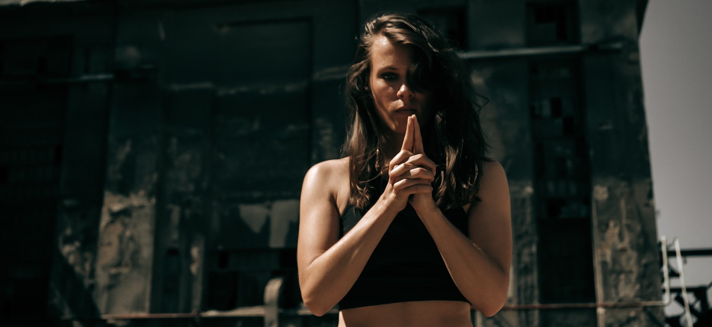

Budokon® je prvi na svetu združil različne gibalne umetnosti v sistem, ki prepleta prvinsko živalsko gibanje, budokon specifično jogo, mešane borilne veščine, kalisteniko (trening s telesno težo) in mobilnost. Ob začetku novega milenija ga je oblikoval Cameron Shayne, ki velja za očeta mešanih gibalnih umetnosti.
Praksa krepi moč, koordinacijo, mobilnost in fleksibilnost praktikanta ob sočasni sprotni refleksiji doživljanja.
Budokon je pot preobrazbe skozi samoopazovanje - pot bojevniškega duha (bu-do-kon), ki ne išče bližnjic, se sooča z izzivi neposredno in prinaša osebno rast ter opolnomočenje.
Je praksa za sodobnega človeka, ki je osvobojena dogme.
Prakso sem v Slovenijo leta 2016 pripeljala
Sanja Somatika, po
intenzivnem obdobju raziskovanja tega čudovitega, lepo zaokroženega sistema.
Integrirala sem jo na takrat 17-letne temelje osebne jogijsko-somatske prakse (RYT), na
bazo borilnih veščin, ki sem jo pridobila na treningih karateja, in na vseživljenjsko raziskovanje plesa,
od jazz baleta in hip hopa pa vse do argentinskega tanga, ki ga živim od leta 2009 in poučujem od 2014.
SREDA, 19:00 Vič
PETEK, 18:00 BTC
Praksa je primerna za gibalce vseh vrst, ki si želijo opolnomočujoče prakse.
Sanja je somatska praktičarka in prva slovenska certificirana budokon izobraževalka.
Argentinski tango, RYT yoga, somatska čuječnost,
psihosocialno svetovanje.
Več o facilitatorki.


Vse prakse potekajo v obliki dveh semestrov, posamični obiski niso možni. Semester je zaključena celota, ko se vpišete, plačate mesto in ne obiskov.
Prakse potekajo po spiralno-progresivnem (od splošnega k podrobnemu s konstantnim sidranjem temeljev) učnem načrtu v obliki BDK delavnic (dialoško, analitično) ali pa v obliki gibalno-meditativne, tekoče (flow) prakse.
Na delavnicah utelešamo vse sestavine budokona in študiramo primarno BDK serijo, ki je sestavljena iz sedmih
koreografiranih delov zavestnega in nadzorovanega toka, ki simbolizira potovanje (bitko in sprejemanje) - od ozaveščanja pa do razkroja določenega omejujočega doživljajsko-vedenskega vzorca.
Organizirane občasno, v obliki vikend intenzivov ali pa med tednom - več dni zapored. Gre za poglobljeno delo na specifičnih BDK elementih
in njihovih kombinacijah.
Večno zelene BDK teme: nadzorovan gib, utelešenost, inverzije, živalsko gibanje, serija, prehodi, udarci,
delo na pridobivanju moči za učinkovito gibanje in podobno.


poglobljeno, personalizirano, intenzivno
Individualne ure omogočajo natančnejše in poglobljeno personalizirano delo, ki je prilagojeno potrebam in željam posameznika.


semester (september/januar, februar/junij)
5 mesečni semester 270 €
Individualne lekcije po dogovoru.
65 eur za 60 minut.
Pišite na sanja@budokon.si
Poletna serija delavnic: Budokon moč.

prva slovenska certificirana učiteljica budokona® - mešane gibalne umetnosti
Psihosociano svetovanje (BSW), somatska čuječnost, integrativni somatski terapevtski pristopi, RYT yoga (hatha, yin, flow), argentinski tango, travmatsko
informirane dejavnosti
več
